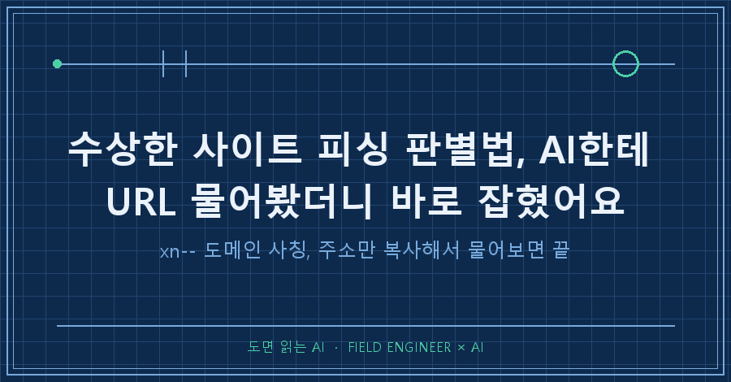
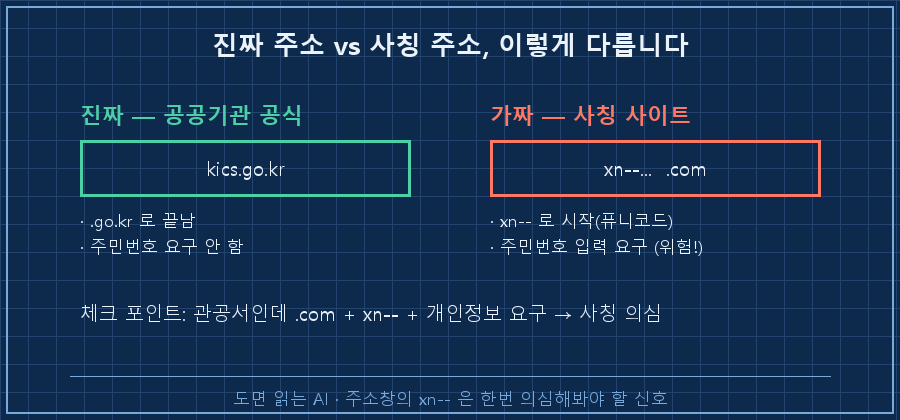
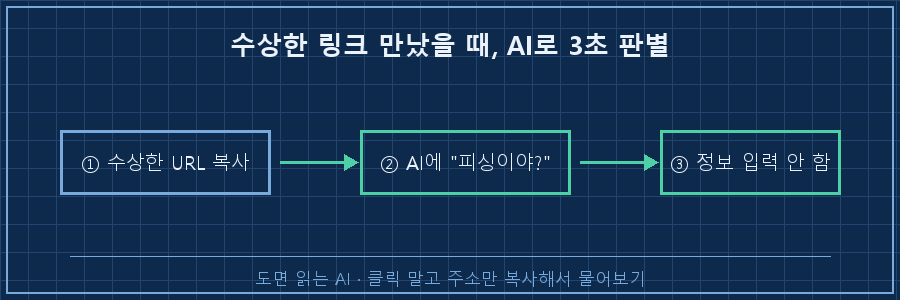

먼저 결론부터 드릴게요.
수상한 링크를 만나면 클릭하지 말고, 그 주소(URL) 전체를 복사해서 AI한테 "이거 피싱 사이트야?"라고 물어보면 됩니다.
특히 주소에 xn--으로 시작하는 이상한 글자가 섞여 있으면, 진짜 기관을 흉내 낸 가짜일 확률이 아주 높아요.
저는 얼마 전에 이걸 직접 겪었어요.
공공기관을 사칭한 사이트에 실수로 들어가 하마터면 주민번호를 넣을 뻔했거든요.
오늘은 그날 제가 뭘 했고, 여러분도 따라 할 수 있는 순서를 정리해볼게요.
1. 공공기관인 척, 근데 주소가 이상했어요
저는 현장에서 자동화랑 제어 설비를 만지며 15년을 보낸 엔지니어예요.
요즘은 일하는 방식 대부분을 AI랑 붙여서 쓰는데, 그날은 업무가 아니라 개인적으로 당황할 일이 생겼어요.
어떤 사이트가 "형사사법포털"이라며 연락이 왔더라고요.
공공기관 이름이 붙으니 순간 진짜인 줄 알고 주소창을 봤는데, 주소가 어색했습니다.
https://xn--ok0b21kw3g60ar45a.com/index2.html정상적인 공공기관 주소는 보통 .go.kr로 끝나요. 그런데 이건 .com인 데다, 도메인 자리에 xn-- 어쩌고 하는 암호 같은 글자가 박혀 있었죠.
게다가 그 사이트가 대뜸 주민번호 입력을 요구했어요.
그 순간 "이거 뭔가 이상하다" 싶어서 손을 멈췄습니다.

2. AI한테 URL 통째로 던졌더니 바로 잡혔어요
그때 제가 한 건 딱 하나였어요.
그 주소 전체를 복사해서, 제가 쓰는 AI한테 그대로 붙여넣고 물어봤습니다.
"이 사이트가 형사사법포털이라고 연락 왔는데, 이거 맞아? 피싱 아니야?"
AI 답은 명확했어요.
진짜 형사사법포털의 공식 주소는 kics.go.kr이고, 지금 이 xn--로 시작하는 .com 주소는 그 기관을 사칭한 가짜라는 거였죠.
결정적으로, 공공기관이 이런 경로로 주민번호를 요구하는 일은 없다는 것까지 짚어줬고요.
덕분에 저는 개인정보를 한 글자도 안 넣고 창을 닫았어요. 피해는 0이었습니다.
직접 이 도메인이 진짜인지 뒤지려면 시간이 걸렸을 텐데, AI한테 물으니 10초 만에 판단이 섰어요.

3. 'xn--'이 뭐길래 — 퓨니코드 사칭 원리 (핵심)
여기서 그날 제가 새로 알게 된 걸 짚고 갈게요. 이걸 알면 다음엔 AI 없이도 냄새를 맡습니다.
원래 인터넷 주소(도메인)는 영문 알파벳과 숫자만 쓸 수 있어요.
그런데 한글이나 다른 나라 문자로 된 주소도 쓸 수 있게 하려고, 그 글자들을 영문 코드로 바꿔주는 방식이 있습니다. 이걸 퓨니코드(Punycode)라고 불러요.
한글 주소가 내부적으로 변환되면 xn--으로 시작하는 암호 같은 문자열이 됩니다.
문제는 나쁜 사람들이 이 점을 악용한다는 거예요.
진짜 기관처럼 보이는 한글·특수문자 도메인을 등록해놓고, 실제로는 xn--으로 시작하는 가짜 주소로 사람을 유인합니다. 보안 쪽에선 이걸 호모그래프 공격(IDN homograph attack)이라고 불러요. 비슷해 보이는 글자로 진짜인 척한다는 뜻이죠.
여기서 브라우저마다 다르게 보인다는 점이 중요해요. 팩트로 정리하면 이렇습니다.
| 구분 | 동작 | 사용자 입장 |
|---|---|---|
| 크롬 등 다수 브라우저 | 의심되는 IDN을 xn-- 원문 그대로 표시 | 이상한 주소가 눈에 띔(유리) |
| 일부 브라우저(사파리 등) | 상황에 따라 한글·유니코드로 예쁘게 표시 | 진짜처럼 보일 수 있음(주의) |
(출처: [Jamf — Punycode attacks](https://www.jamf.com/blog/punycode-attacks/), [Huntress — What Is Punycode](https://www.huntress.com/cybersecurity-101/topic/what-is-punycode-cybersecurity-guide))
그래서 주소창에 xn--이 보이면 그 자체로 "한번 의심해봐야 하는 신호"로 받아들이면 됩니다. 무조건 나쁜 건 아니지만(정상 한글 도메인도 있어요), 공공기관·은행을 사칭하는 경우엔 거의 이 수법이에요.
4. 따라 하는 순서 — 수상한 링크 만났을 때 (2026년 8월 기준)
특별한 앱 없이, 쓰던 AI 하나면 됩니다. 순서만 지키세요.
1. 일단 클릭·입력을 멈춘다. 아이디·비밀번호·주민번호·계좌를 넣으라고 하면 그 순간이 가장 위험합니다. 손을 뗍니다.
2. 주소(URL)를 통째로 복사한다. 링크를 길게 눌러 "주소 복사"를 쓰면 클릭 없이도 주소만 가져올 수 있어요. xn--, 낯선 도메인, .com으로 끝나는 관공서 사칭이 첫 번째 체크 포인트.
3. AI한테 그대로 물어본다. "이 URL이 ○○기관이라는데 진짜 공식 주소야? 피싱 아니야?"라고 붙여넣습니다. 진짜 기관의 공식 도메인이 뭔지, 이 주소가 그와 다른지를 되짚어줘요.
4. 진짜 주소는 검색으로 직접 확인한다. AI 답을 맹신하지 말고, 기관 이름을 포털에 검색해 공식 사이트로 직접 접속해요. 예를 들어 형사사법포털은 검색하면 kics.go.kr이 나옵니다.
5. 개인정보는 절대 넣지 않는다. 조금이라도 애매하면 입력하지 않는 게 정답이에요. 공공기관·은행은 이런 링크로 주민번호나 비밀번호를 요구하지 않습니다.
저도 4번에서 한 번 더 확인하고 나서야 마음이 놓였어요.
AI가 "가짜"라고 해도, 진짜 주소를 검색으로 눈으로 본 다음 창을 닫는 게 제일 확실하더라고요.
5. "접속만 했는데 뭐 깔린 거 아니야?" — 여기가 진짜 궁금했어요
솔직히 그날 제가 제일 불안했던 건 이거였어요.
"PC로 그 사이트를 열어보긴 했는데, 나도 모르게 무슨 프로그램이 깔린 거 아니야?"
여기는 과장 없이 팩트만 말할게요.
요즘 브라우저로 사이트에 '접속만' 한 걸로 프로그램이 자동 설치되는 경우는 흔치 않습니다. 최신 브라우저와 운영체제가 그런 자동 설치를 상당 부분 막아두거든요.
진짜 위험한 순간은 접속이 아니라, 그 사이트에서 파일을 내려받아 실행하거나 개인정보를 입력할 때예요.
그러니 실수로 열었더라도 너무 겁먹진 마세요. 대신 이렇게 하면 됩니다.
- 그 사이트에서 아무것도 다운로드/실행하지 않았고, 정보도 안 넣었다면 → 창 닫고 끝. 걱정할 필요 낮음
- 뭔가 파일을 받았거나 실행했다면 → 백신 검사 한번 돌리기
- 정보를 입력해버렸다면 → 해당 서비스 비밀번호 즉시 변경, 주민번호·계좌를 넣었다면 관련 기관에 신고
공포 조장하려는 게 아니라, 어디가 진짜 위험한 선인지 알아야 덜 불안하니까요.
자주 묻는 질문 (FAQ)
Q. AI가 "피싱이야"라고 하면 100% 믿어도 되나요?
아니요. AI도 틀릴 수 있어서 1차 필터로만 쓰세요. AI 판단 + 검색으로 진짜 공식 주소 직접 확인, 이 두 개를 겹쳐야 안전합니다. 그래도 애매하면 입력 안 하는 쪽으로.
Q. xn--이 들어간 주소는 무조건 나쁜 건가요?
그렇진 않아요. 한글 도메인 같은 정상 주소도 내부적으로 xn-- 형태예요. 다만 은행·공공기관을 사칭하면서 xn--을 쓰면 거의 사칭 수법이니, "기관 사칭 + xn-- + 정보 요구"가 겹치면 가짜로 보면 됩니다.
Q. 문자로 온 수상한 링크(스미싱)도 같은 방법이 되나요?
됩니다. 링크를 누르지 말고 길게 눌러 주소만 복사해서 AI한테 물어보세요. 택배·과태료·정부지원금 사칭이 많은데, 진짜 기관 주소인지부터 확인하면 대부분 걸러집니다.
정리하면 이래요.
수상한 링크는 클릭 전에 멈추고, 주소를 복사해 AI한테 피싱인지 물어보고, 진짜 주소는 검색으로 직접 확인하고, 애매하면 개인정보는 안 넣는다.
저는 이 순서 덕분에 공공기관 사칭 사이트에서 주민번호를 지켜냈어요.
혹시 최근에 "이거 진짜인가?" 싶어 찜찜했던 링크, 하나쯤 있으셨죠.
그 주소, 지금 AI한테 한번 물어보는 것부터 시작하면 됩니다.
이렇게 AI를 실생활 문제에 굴려본 기록은 makefield.ai에 하나씩 옮겨두고 있어요.
---
태그: #피싱사이트판별법 #퓨니코드피싱 #xn도메인 #피싱URL확인 #공공기관사칭 #주민번호피싱 #AI보안활용 #스미싱대처 #IDN호모그래프 #가짜사이트구별 #AI로URL확인 #개인정보보호 #생활보안 #현장엔지니어 #도면읽는AI